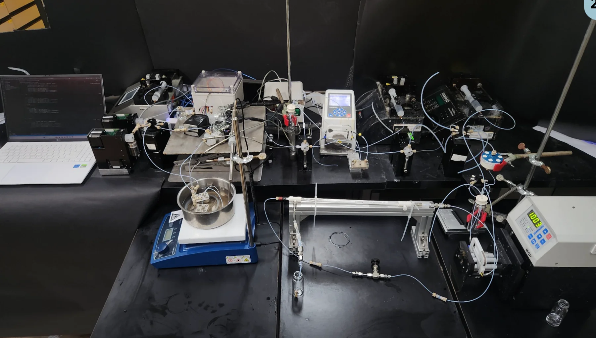

Join the research
Research opportunities in intelligent bioprocessing and smart biochip engineering.
Prospective PhD students

Students interested in biotechnology, microfluidics, bioprocess engineering, computational modelling and biochip technologies are encouraged to explore doctoral research at VIT-AP University.
PhD admission is through the university’s applicable VITREE process. Eligibility, deadlines and admission decisions are governed by VIT-AP University; contacting the research group is not an admission offer.
Apply via VITREE ↗Research positions & collaborations
Funding-dependent positions
Research assistant, project and related positions may become available subject to external or institutional funding, approvals and specific project requirements. No funded vacancy is currently advertised on this website.
Interested applicants and academic collaborators may enquire with a brief research statement and CV.